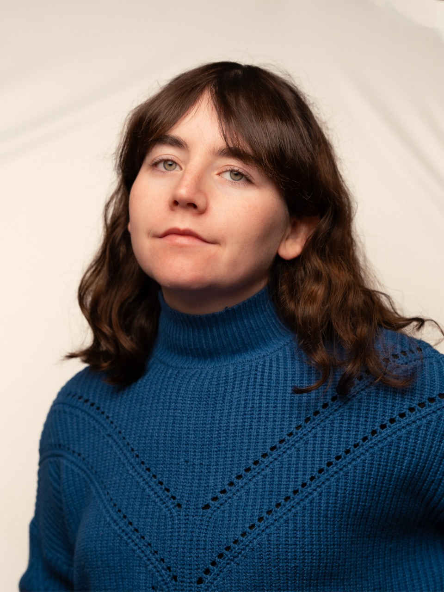

I'm Noemi Rey, a photographer based in Berlin, born and raised in Spain. I work at the intersection of still life and macro photography — drawn to texture, materiality, and the quiet strangeness of objects up close. My work tends toward the tactile: surfaces, layers, the way light reads on something small. I'm particularly interested in product photography for brands that care about how things are made.
